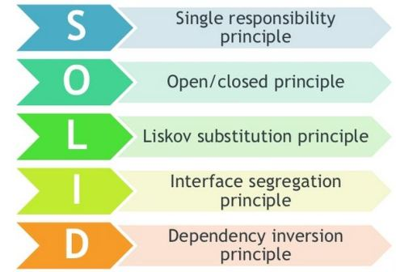

Sep 28, 2020

SOLID design principles is very much preferred in object-oriented
software development. Adopting these practices can also contribute to
avoiding code smells, refactoring code, and Agile or Adaptive software development. It’s a
mnemonic acronym for the following five design principles:
public class Employee {
private String name;
private String designation;
private double salary;
// constructor, getters and setters
// methods that directly relate to the employee properties
public String convertSalaryToString(double salary){
return String.valueOf(salary); }
}
Now, the Employee class works well, and we can store as many employees
as we like in our application.
Let's throw caution to the wind and add a print method:
public class Employee {
//...
void printNameToConsole(){
// our code for printing the name of employee
}
}
This code does, however, violate the single responsibility principle we outlined earlier. To fix our mess, we should implement a separate class that is concerned only with printing the name of the employee.
Open/Closed Principle: Objects or entities should be open for extension but closed for modification. In doing so, we stop ourselves from modifying existing code and causing potential new bugs in an otherwise running application. Of course, the one exception to the rule is when fixing bugs in existing code.
Liskov Substitution: If class A is a subtype of class B, then we should be able to replace B with A without disrupting the behavior of our program.
public interface Car {
void turnOnEngine();
void accelerate();
}
public class MotorCar implements Car {
private Engine engine;
//Constructors, getters + setters
public void turnOnEngine() {
//turn on the engine!
engine.on();
} public void accelerate() {
//move forward!
engine.powerOn(1000);
}
}
This means that every subclass or derived class should be substitutable for their base or parent class.
Interface Segregation Principle: Larger interfaces should be split into smaller ones. By doing so, we can ensure that implementing classes only need to be concerned about the methods that are of interest to them.
Dependency Inversion: The principle of Dependency Inversion refers to the decoupling of software modules. This way, instead of high-level modules depending on low-level modules, both will depend on abstractions.
public class Windows98Machine {
private final StandardKeyboard keyboard;
private final Monitor monitor;
public Windows98Machine() {
monitor = new Monitor();
keyboard = new StandardKeyboard();
}
}
// Here code is tightly coupled. The better approach will be:
public class Windows98Machine{
private final Keyboard keyboard;
private final Monitor monitor;
public Windows98Machine(Keyboard keyboard, Monitor monitor) {
this.keyboard = keyboard;
this.monitor = monitor;
}
}
Here, we're using the dependency injection pattern here to facilitate
adding the Keyboard dependency into the Windows98Machine class.